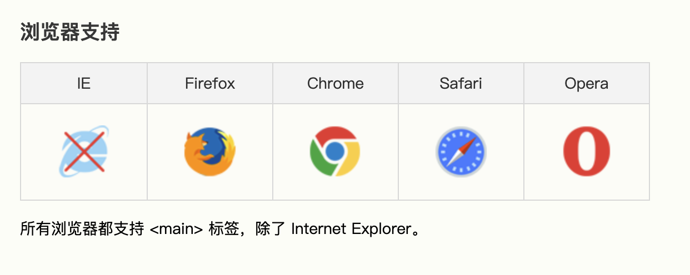
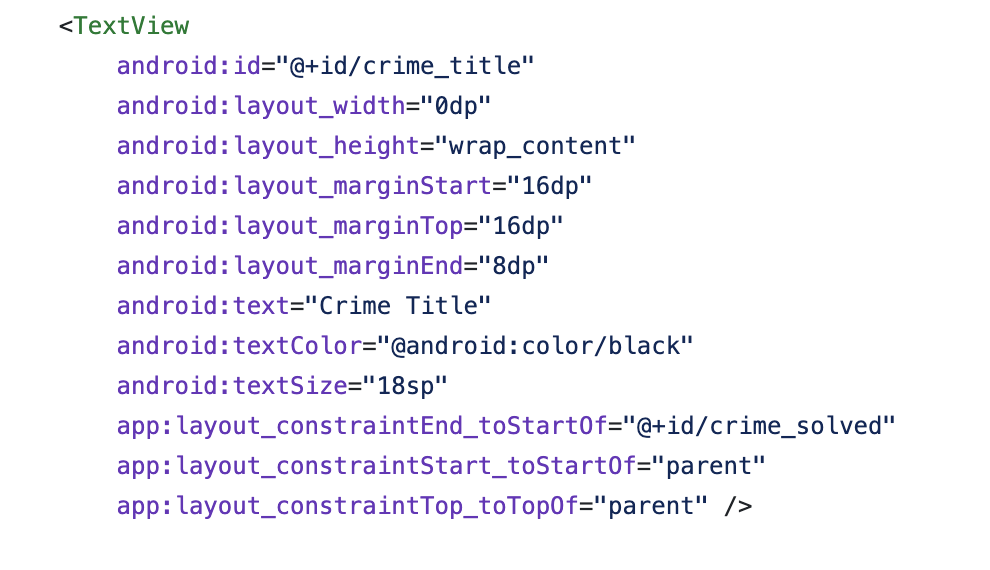

选择符
css的主要优势之一就是能轻易的为同类型的所有元素应用一组样式
举个栗子：试着给文本上色
只能编辑HTML文档旧时代
This is a pink text
this is a deep pink text
有了css之后
This is a young green text use css
this is a young forestgreen text use css
看不出效果？
有多个HTML文档
HTML文档可能有1000行代码
HTML文档里需要修改颜色的文本非常多
声明和关键字
声明块中有一个或多个声明
声明的格式是固定的 属性: 值;
分号是可选的，为了良好的习惯和避免不必要的问题，最好加上
:和;之间的内容由单个或多个关键字组成
关键字之间可以通过空格、/ 或 , 间隔
如果属性或者值有错误，那整个规则(声明)都会被忽略
分组
把同一个样式应用到不同的元素上去
群组选择符
可以放在一起的选择符没有数量限制
群组声明
如果有相同的属性，那么后面的会覆盖前面的
通配符
css2引入，可以与任何元素匹配
特指度0-0-0，即优先级最低
在旧浏览器中使用新元素
比如在IE8中使用main标签
 caniuse可以通过JavaScript让浏览器知道它的存在
document.createElement('main');
元素选择符
最常见的CSS选择符，也是最基本的选择符
不同于XML文档，HTML文档的元素是预置的，如p、h1，甚至是html本身
类选择符
语法 . someClassName
类选择符，可以不关心所涉及的元素，且独立于文档元素
使用之前需要修改文档，以便选择器正常工作
提示：只有适当地标记文档后，才能使用这些选择器
只有适当地标记文档后，才能使用这些选择器，需要一定的设计
类选择器在没有显示声明依附元素时，默认为通配符*
当然类选择器可以指定元素
提示：只有适当地标记文档后，才能使用这些选择器
我大E了，没有3
多类选择符
根据HTML规范，class属性的值可以是多个词，用空格分开，无关顺序
多类继承复用重写抽象接口
通过把两个类选择器链接在一起，仅可以选择同时包含这些类名的元素（类名的顺序不限）
多类继承复用重写抽象接口
多类继承复用重写抽象接口
css中但两个类名之间不能有空格
ID选择符
语法 # someIDName
ID选择符，可以不关心所涉及的元素，且独立于文档元素
使用之前需要修改文档，使用元素的id属性
test magenta color
只有适当地标记文档后，才能使用这些选择器，需要一定的设计
ID选择符 还是 类选择符
几个主要的区别
1. 按约定，在HTML文档中，一个ID能且只能使用一次；而类可以赋予任何元素
2. ID选择符不能结合使用，而类可以
3. ID选择符的权重比类选择符更高
实际上HTML允许出现多个ID，且ID选择器可以生效
但这会影响JavaScript document.getElementById 或者其他潜在的
你的编辑器/IDE会提示你这些潜在的问题？？
你的选择是？
属性选择符
不管是类选择符还是ID选择符，选择的其实都是属性
css2引入，为了解某些类型文档没有前面讲的class和id属性
大致可以分为四类
简单属性选择符
精准属性值选择符
部分匹配属性值选择符
起始值属性值选择符
简单属性选择符
只想选择具有某个属性的元素，而不在乎其值是什么
开发者服务器返回的数据
开发者服务器返回的 HTTP 状态码
开发者服务器返回的 cookies，格式为字符串数组
属性选择器在XML文档中相当有用
XML语言主张要针对元素和属性的用途指定元素名和属性名
精准属性值选择符
进一步缩小范围，只选择有特定属性值的元素。
开发者服务器返回的数据
开发者服务器返回的 HTTP 状态码
开发者服务器返回的 cookies，格式为字符串数组
值必须一致，=== 判断
部分匹配属性值选择符
稍微放宽一些，想选择具有属性值一部分的元素。
[foo*="bar"] 选择的元素有foo属性，且其值包含子串bar (String.prototype.includes)
[foo^="bar"] 选择的元素有foo属性，且其值以bar开头 (String.prototype.startsWith)
[foo$="bar"] 选择的元素有foo属性，且其值以bar结尾 (String.prototype.endsWith)
[foo~="bar"] 选择的元素有foo属性，且其包含bar这个词的一组词
[foo|="bar"] 选择的元素有foo属性，且其值是bar和一个英文破折号-开头的词组，或者就是其本身
不区分大小写的标识符
[class^="fak" i]
QA
THX!